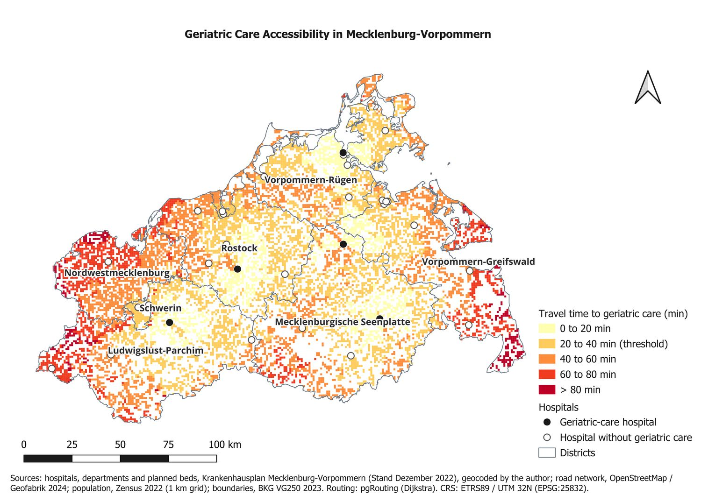
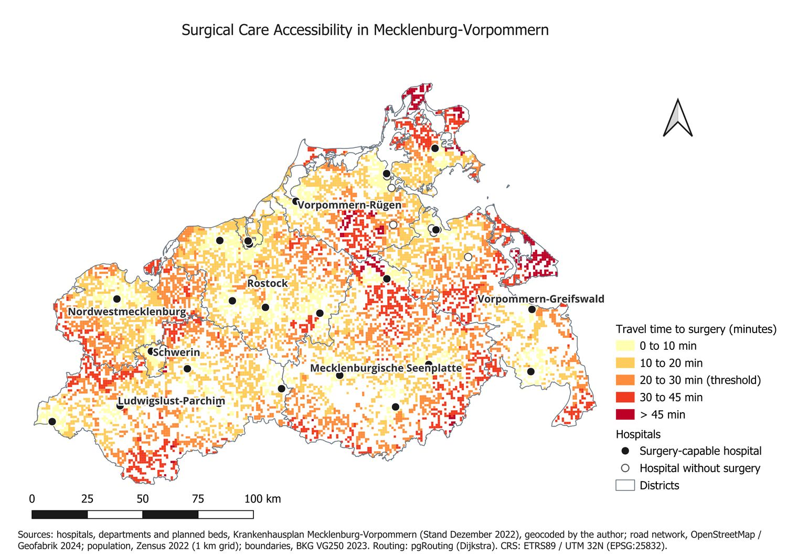
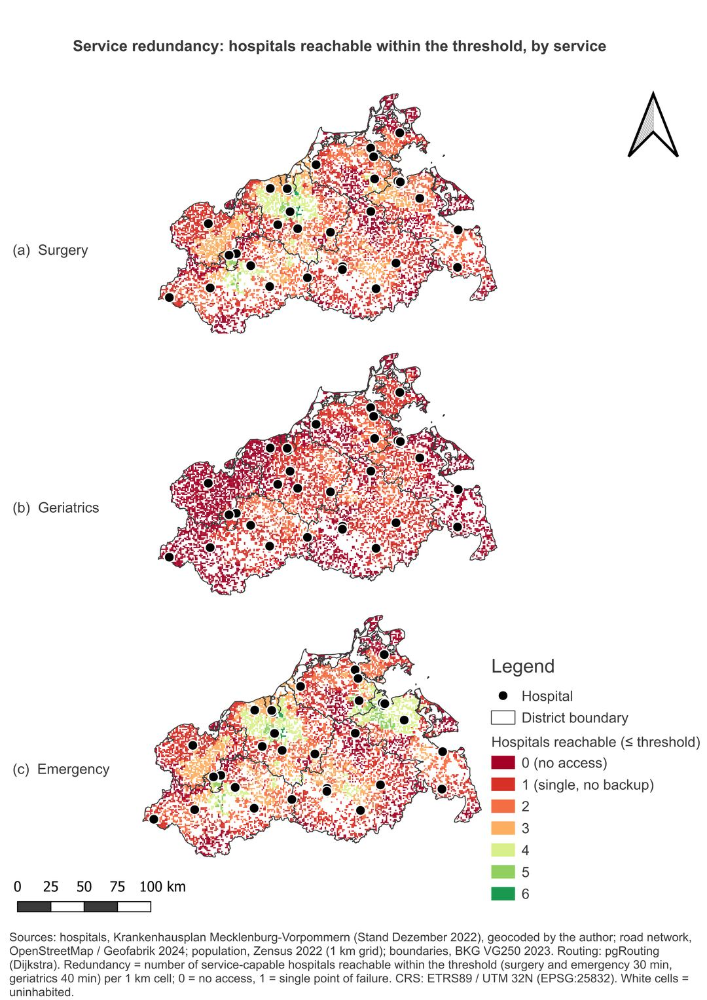
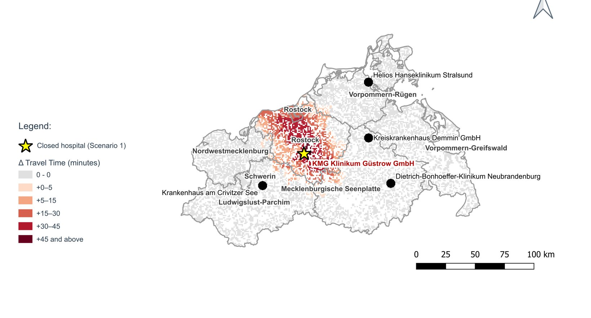
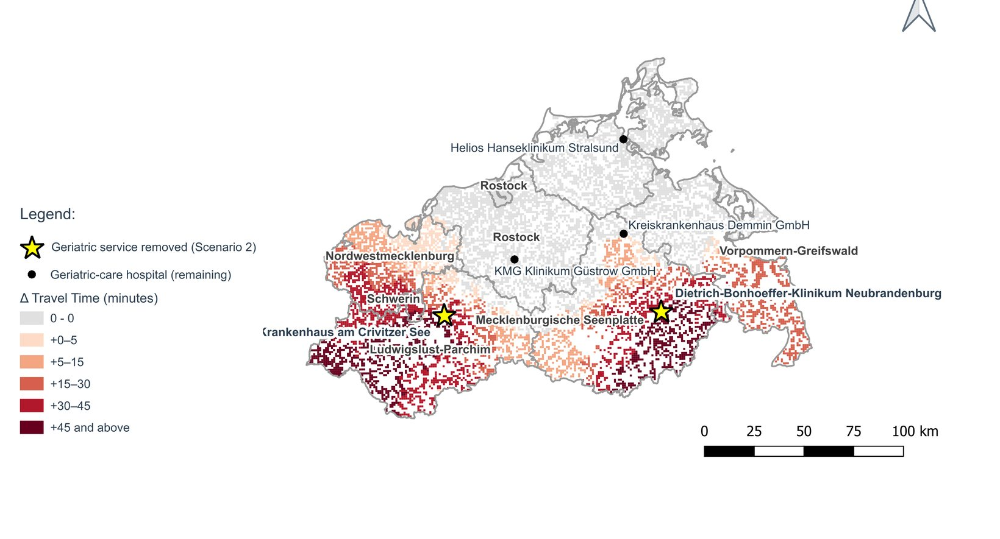
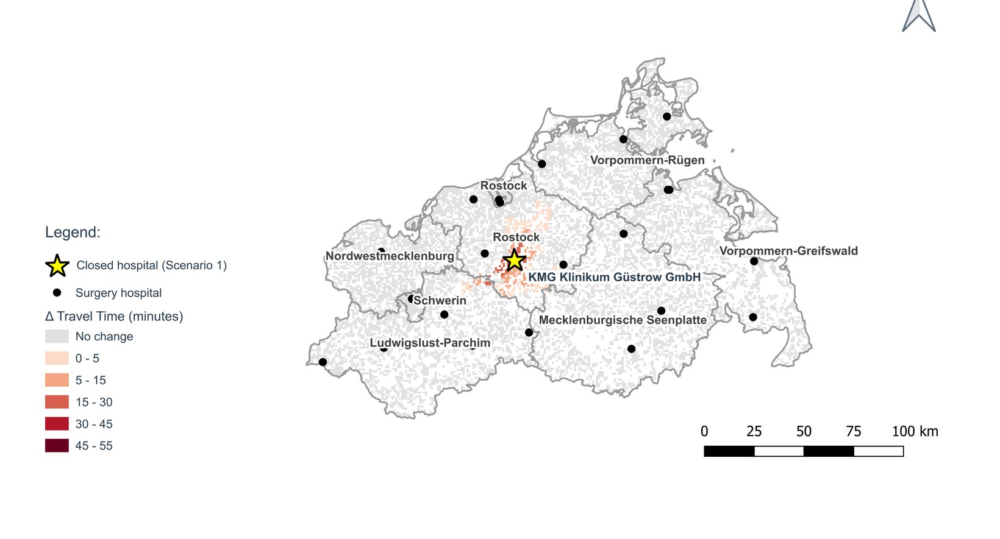
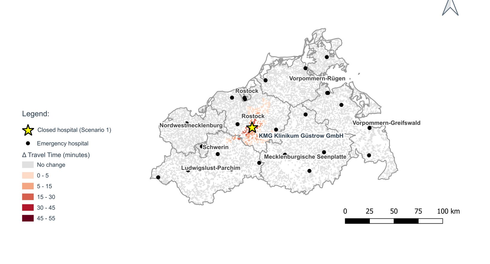
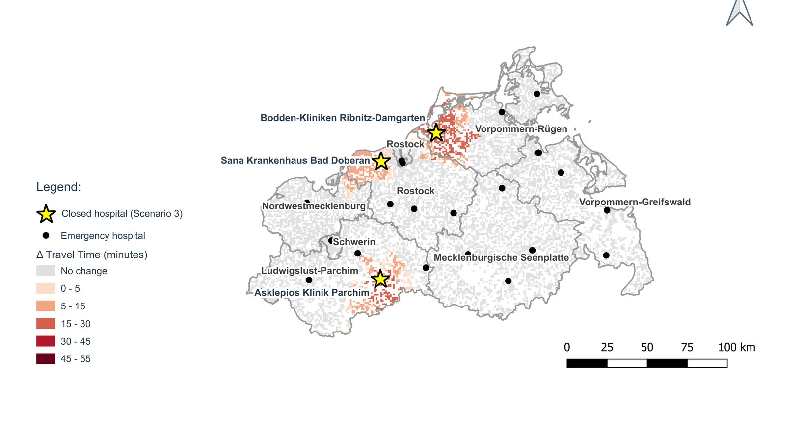
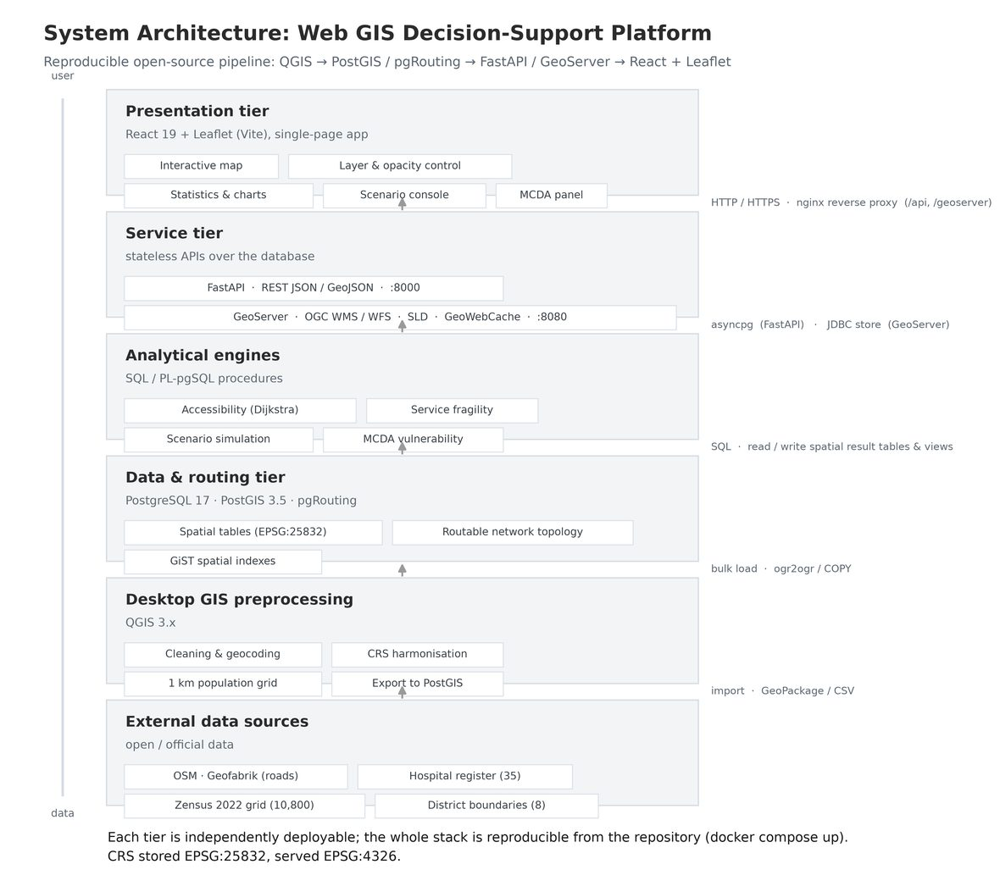
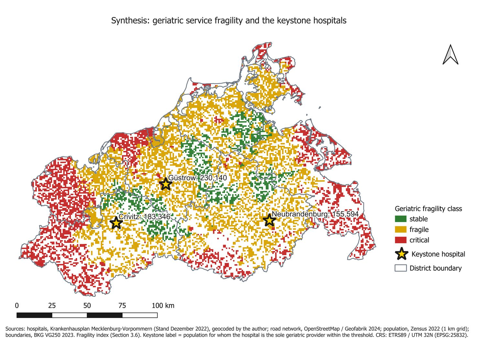

HafenCity Universität Hamburg · Lab for Geoinformatics and Geovisualization
A Web GIS Decision-Support Platform for Healthcare Accessibility and Service Fragility Analysis under Hospital Restructuring in Mecklenburg-Vorpommern, Germany
The platform, recorded live. Switching service group, enabling the fragility layer, querying a single 1 km cell, and loading a closure scenario.
Abstract
Germany's 2024 Hospital Care Improvement Act concentrates specialised care in fewer sites. Standard accessibility measures report whether a population can reach a provider within a time threshold, but they are blind to dependency: two places equally close to care are treated identically even when one has three hospitals in reach and the other has one. This thesis introduces a redundancy-aware service fragility index and a Web GIS platform that applies it to Mecklenburg-Vorpommern, Germany's least densely populated state. A travel-time matrix of 626,381 origin to destination pairs was computed in PostGIS with pgRouting across 10,800 one-kilometre population cells and 35 acute hospitals. The index combines travel time, the gap to the second-nearest provider, threshold breach and elderly exposure under weights derived by pairwise comparison. Surgical and emergency care prove resilient; geriatric care, provided by only five hospitals, does not. Closure simulation shows that impact follows redundancy and network position rather than facility size: removing the state's largest hospital costs no threshold access, while removing one rural keystone displaces 247,592 people.
Principal result
Two services look similar on a coverage map and behave nothing alike
Population-weighted coverage against the planning thresholds of 30 minutes for surgery and emergency care and 40 minutes for geriatric care. Drag the handle to compare the same state under two services.


| Service | Hospitals | Covered | Critical cells | Population in critical cells |
|---|---|---|---|---|
| Surgery | 25 | 89.1% | 93 | 0.6% |
| Emergency | 28 | 90.1% | 102 | 0.7% |
| Geriatrics | 5 | 59.5% | 3,479 | 28.5% |
The contribution
Redundancy is the variable coverage cannot see
The map below counts, for every cell, how many service-capable hospitals are reachable inside the threshold. Dark red is zero. The next band is one, meaning a single point of failure. Read the middle panel: for geriatric care, almost the entire state is one or none.
Drag through the same comparison, surgical against geriatric, one slider at a time →

The index
Four components, weights derived rather than asserted
F = 0.35·T + 0.30·G + 0.20·E + 0.15·B- T 0.35Travel time. Minutes to the nearest service-capable hospital, normalised over 60 and capped.
- G 0.30Dependency gap. Additional minutes to the second nearest hospital, normalised over 30. The novel term. A cell five minutes from one hospital and forty-five from the next is safe on a coverage map and entirely dependent on one facility.
- E 0.20Threshold breach. Binary, 1 where the nearest provider lies beyond the planning standard.
- B 0.15Elderly exposure. Share of residents aged 65 and over, because the same gap does more harm where more older people live.
Weights come from an analytic hierarchy process over the four criteria. The principal eigenvector gives 0.337, 0.312, 0.200 and 0.152, rounded to the operational values above. The consistency ratio is 0.6% against an accepted limit of 10%, so the judgements are internally coherent and stated in the open rather than asserted. Because the full travel-time matrix is stored rather than only each cell's nearest provider, the second-nearest hospital is recovered by a single window function, and all 32,400 cell-service scores compute in 6.9 seconds.
Closure simulation
Impact follows network position, not facility size
Each hospital carries an active flag. Clearing it re-derives the nearest open provider for every cell directly from the stored matrix and writes the outcome under a new scenario identifier; nothing is deleted and the baseline remains intact. No re-routing is required, and this is exact rather than approximate: closing a hospital changes no road cost and no shortest path, it removes a set of destinations, so taking the minimum over those that remain is identical to recomputing the whole matrix without it.
| Scenario | Service | Cells losing access | Population |
|---|---|---|---|
| Keystone removal KMG Klinikum Güstrow | Geriatrics | 1,075 | 247,592 |
| Service withdrawal Crivitz and Neubrandenburg | Geriatrics | 1,955 | 353,832 |
| Rural cluster closure Bad Doberan, Parchim, Ribnitz-Damgarten | Emergency | 638 | 60,465 |
| Dominant-hub removal University Hospital Rostock, the largest in the state | All | 0 | 0 |





Figure 3. Closure scenarios, change in travel time per 1 km cell. Step through with the arrows, the dots, or the left and right keys. Scenario 4, downgrading the largest hospital in the state, is not shown because it displaces nobody: every cell it served retains an alternative inside the threshold. Own elaboration. CRS: ETRS89 / UTM zone 32N (EPSG:25832).
Comparison with prior work
It agrees with the field standard, then sees what the standard cannot
The established measure in the accessibility literature is the Enhanced Two-Step Floating Catchment Area (E2SFCA) of Luo and Qi, which aggregates supply against distance-decayed demand. A new index has to clear two bars: it must not contradict the established method where that method is reliable, and it must produce something the established method structurally cannot.
Both hold. Spearman correlation against E2SFCA is strongly negative for every service, which is the expected direction because high access should mean low fragility. The divergence column is the contribution: cells that E2SFCA ranks as adequately served, at or above median access, while the fragility index flags them fragile or critical. That is single-provider dependency, and supply aggregation cannot express it.
| Service | Spearman ρ | p | Divergent cells | Population | Share |
|---|---|---|---|---|---|
| Surgery | −0.736 | <0.001 | 377 | 37,379 | 2.4% |
| Geriatrics | −0.802 | <0.001 | 4,263 | 784,006 | 50.2% |
| Emergency | −0.746 | <0.001 | 282 | 26,871 | 1.7% |
For surgery and emergency care the divergence is small, under 3% of residents, which is the correct result: where supply is dense the two measures should agree. For geriatric care it is 50.2% of the population. Half the state is adequately served by the standard measure and dependent on a single provider by this one.
System
Four layers, one source of truth
Analysis executes inside the database rather than in an external script, so the layer that serves the browser reads the same rows the analysis wrote.
See how each tier is built, from the routing graph to the published layers →

Evaluation
Three independent checks
Routing
Validated against the Open Source Routing Machine on 100 matched origin to destination pairs. Pearson correlation 0.916, mean absolute error 9.0 minutes, root mean square error 11.2 minutes. Rural times run optimistic by 6.5 minutes, so the reported deficit is conservative.
Analysis
The SQL implementation was independently reimplemented in Python with GeoPandas and compared district by district: 100% class agreement, correlation 1.0, a single residual of 0.0001. Two implementations agreeing is evidence; one running is not.
Robustness
Thresholds varied by 5 minutes, network speeds by 20%, and the index re-run under equal, travel-heavy, redundancy-heavy and equity weight sets. Between 85.7% and 91.8% of cells retain their class. The modifiable areal unit problem is tested at 1, 2, 5 and 10 kilometres and at district level.
Synthesis
Where a planner would act first

Implementation
Open data in, open standards out
Data
Hospital register 2022, geocoded by hand; Federal Joint Committee quality reports 2023 for service profiles; OpenStreetMap roads via Geofabrik 2024; the 2022 census one-kilometre population grid; federal administrative boundaries. Three different native coordinate systems, all harmonised to a metric one.
Graph
35,062 road segments and 11,156 kilometres become 34,114 junctions. Connectivity was tested rather than assumed: of 212 components the largest holds 31,335 junctions, and zero hospitals and zero populated cells fall outside it.
Analysis
PostgreSQL 17 with PostGIS and pgRouting. Common table expressions and window functions over the stored matrix, executed inside the database rather than in an external script, so the platform serves the same rows the analysis produced.
Delivery
FastAPI for analytical endpoints, GeoServer publishing 12 layers as Web Map Service and Web Feature Service with portable styling, React and Leaflet in the browser. Every endpoint responds in under 0.4 seconds. Reproducible from a single compose file.
Data tier
The analysis runs inside the database
Common table expressions and window functions run over the stored travel-time matrix in PostgreSQL itself, not in an external script. For a decision-support tool that distinction matters: the platform serves exactly the rows the analysis produced, so the map on screen and the result in the thesis cannot drift apart.
Tables
12, plus 3 publication views
Indexes
34, GiST and B-tree
Database size
278 MB
Population cells
10,800 at 1 km
Routed pairs
626,381 at baseline, 755,981 across all scenarios
Scenario rows
129,600

Routing
A road network that was tested, not assumed
OpenStreetMap roads become a routable graph in pgRouting with a speed assigned per road class. Every populated cell is then routed to every hospital with a many-to-many Dijkstra and the matrix is stored once rather than recomputed per request, which is what keeps the interactive parts of the platform responsive.
Connectivity was established before any travel time was computed. A graph that is silently split returns confident nonsense rather than an error, so the components were counted and the hospitals and populated cells checked against the largest one.

Service tier
An interface that cannot write
FastAPI, asynchronous throughout and pooled with asyncpg. Nine endpoints and a WebSocket channel for long operations. Two decisions shape it. GeoJSON is assembled inside PostGIS with ST_AsGeoJSON, so a whole surface is one round trip and no geometry is ever reshaped in Python. And the service connects as gis_readonly, a login that can connect and select and nothing else, so no endpoint can write at all. Closure scenarios are derived offline and served from a results table: simulating a closure never touches the baseline.

Interoperability
Open standards out, not a private format
GeoServer publishes 12 layers as Web Map Service and Web Feature Service: 10 of them defined by a SQL view kept in the repository rather than configured by hand in a web form, plus the hospital and district layers read straight from their tables. Styling travels with each layer as a Styled Layer Descriptor, versioned beside the queries, so a change to a class break or a colour shows up in a diff. Native geometry is EPSG:25832 and GeoServer reprojects to EPSG:4326 on the way out.

The test of an open standard is whether something other than your own client can read it.


Deployment
One command, four containers
nginx serves the built client and proxies /api and /geoserver, so the browser sees a single origin and there is no cross-origin configuration to get wrong. The database and the GeoServer workspace each keep state in a named volume. Secrets come from the environment and are never committed: the repository ships an example file and a bootstrap that creates the least-privilege role on first start.


Presentation tier
A client a planner can operate
React 19 built with Vite, Leaflet for the map. Raster surfaces arrive as Web Map Service tiles from GeoServer; statistics, scenarios and cell queries come from the application programming interface. The sidebar switches service group, toggles each layer, sets opacity and swaps the basemap. The panels carry coverage totals, coverage by district, a covered against uncovered breakdown, the scenario console and the multi-criteria vulnerability ranking.


Limitations
What the results do not support
Elderly exposure
The share of residents aged 65 and over is a district rate applied to every cell within that district, not a measured count. Within a district all cells carry the same value, so genuine internal variation is invisible. It is the softest input in the chain and it carries the lowest weight.
Routing
Travel is modelled as undirected, so one-way restrictions are not represented. Motorway ramps are filtered out, which places the A19 and A20 outside the main connected component. Both choices slow modelled journeys, so the reported access deficit is conservative rather than optimistic.
Evaluation design
The weights were elicited from one analyst and the interface was assessed by heuristic inspection rather than with users. Both evaluations are single-judge, and the judge is the author. Establishing decision support empirically would require a task-based study with planning practitioners.
Temporal scope
The inputs are a static snapshot assembled from mixed vintages between 2022 and 2024. The analysis describes one moment and supports no claim about trends. Supply is also measured as beds, which for geriatric care overstates capacity where a hospital's beds are not all geriatric.
Resources
Platform, code and citation
The platform runs on a small cloud instance and may occasionally be offline. The analytical database, the SQL, the API and the front end are included in the digital appendix.
@mastersthesis{Hameed,
author = {Hameed, Yasir},
title = {A Web GIS Decision-Support Platform for Healthcare
Accessibility and Service Fragility Analysis under Hospital
Restructuring in Mecklenburg-Vorpommern, Germany},
school = {HafenCity Universit\"at Hamburg},
type = {M.Sc. thesis},
address = {Hamburg, Germany}
}